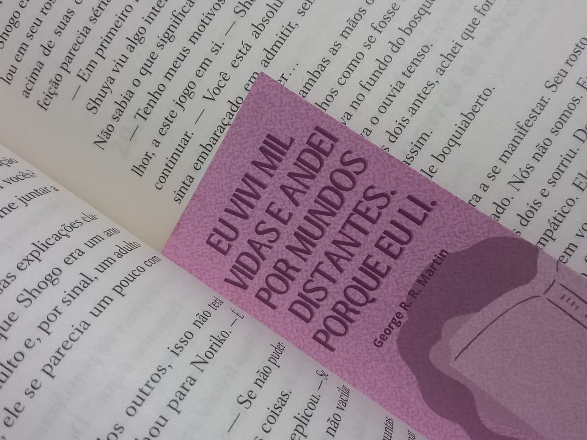

Sobre Mim
Sou estudante de Ciências da Computação na Universidade Federal de Alfenas (UNIFAL). Nascida em Taubaté - SP, em 10/10/2005, tenho 20 anos. Adoro a área da tecnologia e também os animais, especialmente cachorros e pássaros.
Passatempos e Interesses
- Leitura: Sou uma leitora de fantasia e romance. Minha autora favorita é Jeaniene Frost; sou apaixonada por todos os livros dela, especialmente One Foot in the Grave e Wicked All Night.
- Culinária: Também gosto de cozinhar, principalmente doces. Meus favoritos são o bolo de cenoura com chocolate e o pão doce conhecido como fatia húngara de coco.

Um dos meus passatempos favoritos!
Minha Trajetória
Minha jornada na tecnologia começou no ensino médio, quando cursei o técnico integrado em Desenvolvimento de Sistemas. Gostei muito da área e decidi seguir na graduação. Atualmente na UNIFAL, participo de dois projetos de extensão: um no "Arte de Salão" e outro lecionando informática básica para crianças de baixa renda, através do projeto "Desenvolvimento Humano: Saúde, Educação e Trabalho".
Formação Acadêmica
- Universidade Federal de Alfenas (UNIFAL) – Alfenas/MG
Bacharelado em Ciência da Computação (em andamento) – 2024 a 2027 (previsto) - Escola Técnica Estadual Machado de Assis (ETEC Machado de Assis) – Caçapava/SP
Técnico em Desenvolvimento de Sistemas – 2021 a 2023